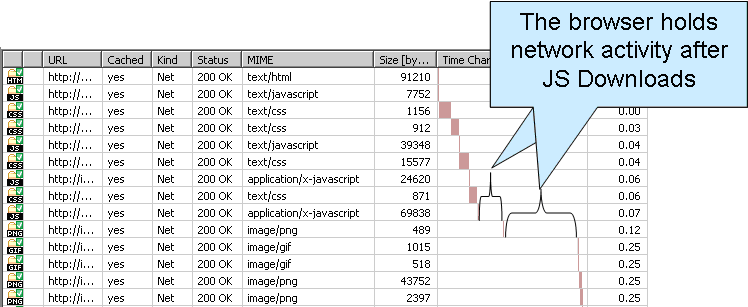
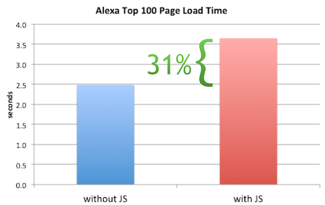

JavaScript @ CloudFlare
an intervention
Hi I'm Chris
Some projects I work on:
- Rocket Loader
- CloudFlareJS
- Mirage, Preloader, Tracking..
Valid JavaScript questions:
- Why is it so fraked up?
- Why won't it go away?
- What is CloudFlare doing about it?
First, a cheap meme:

Another perspective:

And again:

People like to make fun of JavaScript
and JavaScript deserves it

A beard meme:

John McCarthy (Lisp), Dennis Ritchie (C), Bjarne Stroustrip (C++), James Gosling (Java), Guido van Rossum (Python), Brendan Eich (JavaScript)
Meet the lowly identifier
foo
> foo
Reference Error: foo is not defined
> var foo
undefined
> foo
var foo
undefined
Truthiness and Falsiness
// Falsey values:
// false, 0, undefined, null, NaN, ''
var foo = '';
if(foo)
console.log("This sentence is never spoken.");
// Truthy values:
// Anything that is not a falsey value
var bar = 100;
if(bar)
console.log("Bar is truthy, so consider this logged.");
Falsey or not, here it comes
> NaN != undefined
true
> null != undefined
true
> undefined != null
false
Clever, clever type coercion
Much cleverness is involved
Behold the cleverness:
> [] + []
""
> [] + {}
"[object Object]"
> {} + {}
NaN
(wat)
Wat is really happening
- Plus operator adds numbers
- Plus operator also concatenates strings
- Everything else must be converted
- Chaos generally ensues
But.. but... why??
Frankly, no language is perfect.
Why your programming language sucksEngineers love to bitch about the languages they don't use
A topical quote
More of a paraphrase than a quote, really..
"JavaScript won because it's the best terrible language ever made."
~ Mike Sofaer
Douglas Crockford sez
"Most of the people writing in JavaScript are not programmers. They lack the training and discipline to write good programs. JavaScript has so much expressive power that they are able to do useful things in it, anyway."
Douglas who?
Crockford is a funny guy
"The design of the language on the whole is quite sound. Surprisingly, the ECMAScript committee does not appear to be interested in correcting [JavaScript's] problems. Perhaps they are more interested in making new ones."
The awesomeness has only begun..
JavaScript is in your browser
Before you get excited
This is a terrible thing
JavaScript is slow
- JavaScript does not run as fast as native code
-

- JavaScript downloading "blocks" other website resources
- JavaScript EXECUTION "blocks" other website resources
The worst part
JavaScript can be used to load more JavaScript!

What is this "blocks" thing?
When JavaScript downloads and runs, it prevents other parts of the page (including other JavaScript) from downloading and running.
A contrived HTML document
<!DOCTYPE html>
<html>
<head>
<title>Awesome Webpage</title>
<script type="text/javascript" src="/some/javascript.js"></script>
<link rel="stylesheet" href="/some/stylesheet.css" />
</head>
<body>
<h1>Awesome webpage header!</h1>
</body>
</html>
An example I googled:
An example I stole from Steve Souders:
JavaScript is a disease
..and CloudFlare is the cure.
(sort of)
Enter Rocket Loader
Rocket Loader is a tool to make JavaScript not 'block'
"The plan"
by Steve Souders
- Break all script tags to stop them from loading
- While the page loads, preload scripts asynchronously
- ???
- Allow the page to load completely
- Step through all broken scripts and "fix" them so that they execute
- Profit
This is really hard
- How do you break scripts before they start downloading?
- How do you preload scripts without executing them?
- document.write
A word on document.write
DONT
CloudFlare domination strategy
- NGINX "breaks" all scripts
- PHP backend gives us same-domain AJAX ("the bag")
- JavaScript client library ("Rocket") handles execution
How do you "break" scripts?
Before:
<script type="text/javascript" src="/javascripts/jquery.js"></script>
<script type="text/javascript" src="/javascripts/cornify.js"></script>
<script type="text/javascript">
$(function() {
alert('am i doin it rigjt?');
});
</script>
After:
<script type="text/rocketscript" data-rocketsrc="/javascripts/jquery.js"></script>
<script type="text/rocketscript" data-rocketsrc="/javascripts/cornify.js"></script>
<script type="text/rocketscript">
$(function() {
alert('am i doin it rigjt?');
});
</script>
CLoudFlare's (sexy) bag
Something only CloudFlare can do well.
Preload JavaScript via AJAX
CloudFlare sets up a same-domain AJAX endpoint
GET /cdn-cgi/pe/bag?r[]=/javascripts/jquery.js&r[]=/javascripts/cornify.js
The bag streams it back
--foobar
Bag: 257|222|-1|200|text/bag-manifest
0:http://www.leangreenmonkey.info/small1.js
1:http://www.leangreenmonkey.info/small3.js
2:http://www.leangreenmonkey.info/small2.js
--foobar
Bag: 79|39|0|200|application/x-javascript|7200
function small1(bleh) {
return bleh;
}
--foobar
Bag: 79|39|2|200|application/x-javascript|7200
function small2(bleh) {
return bleh;
}
--foobar
Bag: 79|39|1|200|application/x-javascript|7200
function small3(bleh) {
return bleh;
}
--foobar--
BAM
All your JavaScript preloaded in one request
Stylesheets
coming to a bag near you
Enter the Rocket
The page is loaded
The JavaScript is precached
Time to dominate
Rocket executes scripts
Page order must be maintained
All page events are simulated
Page state is masked
Scripts are cheeky bastards
Scripts look at themselves (introspection)
Scripts insert other scripts
Scripts call document.write
Handling curious scripts
Scripts need to be tricked into thinking the DOM is still sane.
Page events
Simplified example:
window.addEventListener = function(type) {
if(type == 'load')
deferHandler(arguments);
else
listenNormally.apply(window, arguments);
}
Introspection
Simplified example:
document.getElementsByTagName = function(type) {
if(type == 'script')
return listOfFakeScripts;
else
return normalListOfElements;
}
More on document.write
- Intended for insertion while HTML is parsing
- If it happens late, it kills the page
- It happens EVERYWHERE (ads)
Rocket pwnz document.write
Simplified example:
document.write = function(out) {
console.log("Appending to document.write buffer: \n" + out);
parser.parseChunk(out);
};
Rocket has a parser
- Raw HTML is passed to parser
- Parser generates an abstract representation
- AST is sent back to vile script from whence it came
When scripts have babies
Dynamically created scripts are 'bagged' on the fly.
With document.write
Scripts created with document.write are added to the queue after their parent.
With document.createElement
Scripts created with document.create element are added to the end of the queue.
In summary
A short bit on CFJS
- Born from Rocket Loader
- Platform for loading / sandboxing JS apps the right way
- Works with or without the bag
- We use it for apps. Ads?
- Learn more about CommonJS
Looking forward
- Mirage: the next wave of domination
- CSS optimization in Rocket Loader
- CFJS: Apps, ads and more